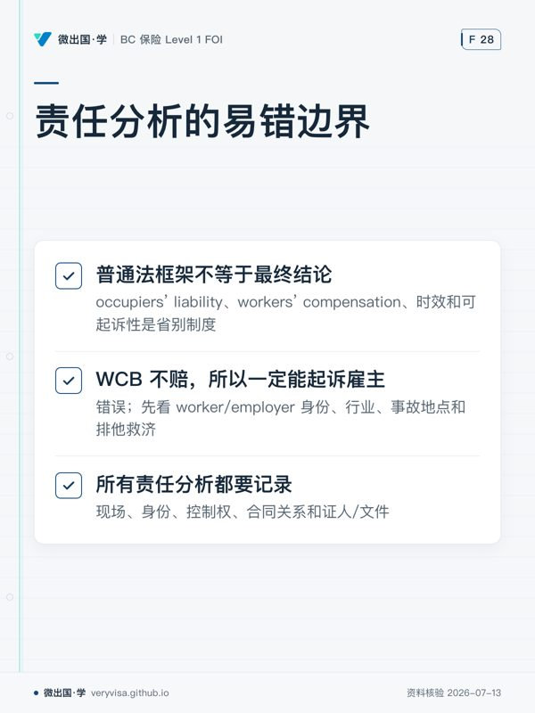

温习目标
- 区分 contract liability 与 tort liability。
- 用 duty、breach、causation、damage、defences 的框架分析 negligence。
- 认识 occupier、employer、tenant、bailee、parent/guardian、animal owner 等常见责任暴露。
温习卡
| 要素 | 要问的问题 |
|---|---|
| duty | 被告对该原告是否负有注意义务？ |
| standard / breach | 在当时情境下，合理人会做什么？被告是否偏离？ |
| causation | 该偏离是否造成或实质导致损失？ |
| damage | 是否有可主张的损害，范围与证据是什么？ |
| defences | 是否有 contributory negligence、notice、法定抗辩或时效问题？ |
2026 易错边界
- occupiers’ liability、workers’ compensation、时效和可起诉性是省别制度；普通法框架不等于最终结论。
- “WCB 不赔，所以一定能起诉雇主”错误；先看 worker/employer 身份、行业、事故地点和排他救济。
- 所有责任分析都要记录现场、身份、控制权、合同关系和证人/文件。
闭卷自测
- 顾客在商业场所滑倒。按 negligence 框架列出五项必须证明或调查的问题。
- 员工在工作中受伤，何时可直接假设能起诉雇主？解释正确做法。
- landlord 与 tenant 对场地安全可能分别有什么问题？为什么不能只看产权证？
- bailee for hire 保管客户财物时发生损坏，应调查什么？
- 写出三种可能的 defence 或限制，并说明为何需要结合省份与事实。
参考答案与判分点
- duty、适用注意标准/是否 breach、因果关系、实际损害、defences；还应调查 occupier 身份、清洁检查记录、警示、现场状况与通知。
- 不能直接假设。先确认适用省级 workers’ compensation scheme、双方身份、行业分类、事故是否属工作相关以及 statutory bar/排他救济。
- 关注谁实际占有/控制、租约如何分配维修义务、危险来自何处、谁知道或应知风险、适用 occupiers 法。产权并非唯一答案。
- 保管关系和合同、交付时状态、保管标准、损坏原因、控制权、通知、免责/限责条款及证据链。
- 例如 contributory negligence、及时警示/合理检查、limitation；其适用和效果会因省法与事实不同而变。
错题记录
| 日期 | 题号 | 缺失的要素/证据 | 下次触发问题 |
|---|---|---|---|
| “谁控制风险？谁知道什么？损失如何由此发生？” |
本页知识卡
不看正文也能拿到这一节的核心内容：先看导读，再看图。点图放大，左右翻页。
- 先看先从 duty 开始，沿着责任成立链条逐项问。
- 易漏框架问完仍不能直接收尾，另有属地规则会影响案件能否继续。
- 下一步去练习，用一个事实场景把五问依次写完整。

- 先看先看中间那条，最容易把赔偿渠道直接推成诉权。
- 易漏一个赔偿渠道失效，并不会自动打开另一条；资格和属地仍要先核。
- 下一步去练习，把现场关系和文件证据列成核查表。
本站依据官方原文自撰